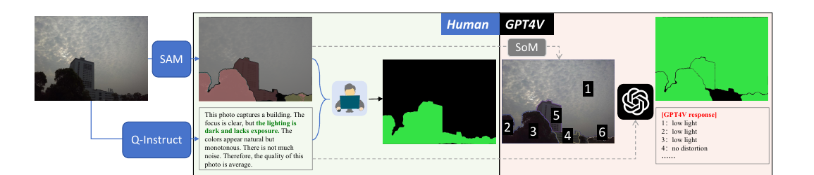
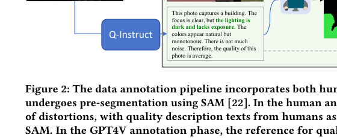
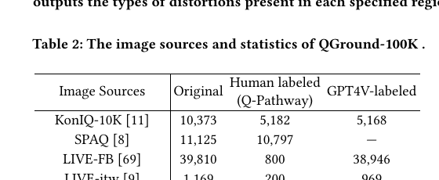

Q-Ground: Image Quality Grounding with Large Multi-modality Models
ACM MM 2024 Oral。代码 + 数据:Q-Future/Q-Ground、数据集 chaofengc/QGround-100K。
本文按你的要求重点讲 QGround-100K 数据集怎么做,并展示真实示例。
1. 出发点 (Motivation)
现在的画质评估(IQA)有两类输出:要么给整张图打一个总分(KonIQ、SPAQ 那种),要么用 LMM 给一段文字评语(Q-Instruct 那种)。两类都停在全局——它们能说"这张图有点糊",却说不出"糊在哪儿"。
但很多场景恰恰要的是"哪儿":图像增强要知道哪块该修、内容审核要定位瑕疵、相册要圈出"脸糊了"的那部分。把画质缺陷的位置分割出来(fine-scale visual quality grounding)是这篇论文要补的空白。
要训这样一个模型,得有前所未有的数据:不是 (图→分) 或 (图→文),而是 (图, 画质描述, 失真分割掩码) 三元组。这就是 QGround-100K,本文的核心贡献。
2. 方法 (Method)
核心思想 (类比)
把画质标注想象成医生看 X 光片。旧做法是医生只写一句诊断报告("这张片子质量一般")。Q-Ground 要的是医生不仅写报告,还在片子上用不同颜色的笔圈出:这块是运动模糊(红)、那块过曝(黄绿)、角落低光(绿)……报告(文本)+ 圈注(掩码)+ 原片(图)三件套绑在一起,就是一条训练样本。
而"圈注"这件事人工很贵,所以 Q-Ground 用两条流水线同时造:一条人工精标,一条让 GPT4V 自动圈——下面 §2.2 详解。
2.1 三元组与 5 种失真
QGround-100K 的每条样本是 \((x_{img},\, x_{txt},\, y_m)\):图像、画质描述文本、失真分割掩码。掩码只标 5 种最常见的失真(按 Q-Instruct 统计选出,频率高、对画质影响大):
模糊 (blur) · 过曝 (overexposure) · 噪声 (noise) · 抖动 (jitter) · 低光 (low light)
数据建在 Q-Instruct / Q-Pathway 之上(它已经有多样来源图像的人工画质文本),Q-Ground 给这些图补上分割掩码;新增图像的画质文本则用 Co-Instruct(与 GPT4V 同级)自动生成。来源覆盖 KonIQ-10K、SPAQ、LIVE-FB、LIVE-itw、AGIQA-3K、ImageRewardDB(含 5.5K AI 生成图)。
2.2 ★ 数据制作:双轨标注流水线
这是全文工程核心。先用 SAM 对图做预分割(给出干净的候选区域边界),再分两条标注流:

① 人工标注(§3.2.1): 15 名受过训练的标注员,拿到 (图, 画质描述) 对,任务是圈出失真区域 + 归类失真类型。关键设计:① 必须对照画质描述文本标(避免标到"显眼物体"而非"真失真区");② SAM 预分割给统一边界,但标注员保留手调权——因为 SAM 倾向于按物体切,而失真区不一定贴着物体。
② GPT4V 标注(§3.2.2): 为省人力、上规模,用 Set-of-Mark (SoM) 技巧让 GPT4V 自动标:SAM 分割 → 每个区域打上数字编号叠在图上 → 把"带编号的图 + 同一份画质描述"喂给 GPT4V → GPT4V 逐区域输出失真类型(见 Fig 2 右侧"1: low light, 2: low light …")。这样 GPT4V 不需要画掩码,只需"给每个已切好的区域贴标签",任务被降维成它擅长的视觉-文本理解。
标注可靠性(Eq 1): 每张图至少 3 个不同标注员标。论文用"成对交集 / 较小掩码"的 recall 度量一致性:
—— 翻译: 对每张图、每对标注掩码 $(A_j,B_j)$,算它们交集占"较小那个掩码"的比例(一个掩码是另一个的子集就算一致),再对所有对/所有图平均。值越接近 1 越一致。论文报告各数据集 0.86–0.98,说明人工标注相当可靠。
2.3 数据格式:掩码用颜色编码 5 种失真
三元组里的掩码 \(y_m\) 不是二值图,而是一张 RGB 彩色图:每种失真对应一个固定颜色,黑色=无失真。代码里写死了这套调色板:
repo/utils_label.py:L75-L90 — 5 种失真 → 固定 RGB 颜色(+ 无失真=黑)
DISTORTION_TYPES = {
'jitter': np.array(ImageColor.getrgb('#4b54e1')),
'noise': np.array(ImageColor.getrgb('#93fff0')),
'overexposure': np.array(ImageColor.getrgb('#cde55d')),
'blur': np.array(ImageColor.getrgb('#e45c5c')),
'low light': np.array(ImageColor.getrgb('#35e344')),
}
DISTORTION_TYPES_EXT = {
'jitter': np.array(ImageColor.getrgb('#4b54e1')),
'noise': np.array(ImageColor.getrgb('#93fff0')),
'overexposure': np.array(ImageColor.getrgb('#cde55d')),
'blur': np.array(ImageColor.getrgb('#e45c5c')),
'low light': np.array(ImageColor.getrgb('#35e344')),
'no distortion': np.array([0, 0, 0])
}
所以 jitter=蓝 #4b54e1、noise=青 #93fff0、overexposure=黄绿 #cde55d、blur=红 #e45c5c、low light=绿 #35e344。训练时从这张彩色掩码按颜色抠出每种失真的二值掩码:
repo/utils_label.py:L93-L114 — 彩色掩码 ↔ 标签;按颜色抠单类二值掩码(>100 像素才算)
def rgb2label(mask_rgb):
mask_label = np.zeros(mask_rgb.shape[:2], dtype=np.uint8)
for i, (k, v) in enumerate(DISTORTION_TYPES.items()):
mask_label[np.isclose(mask_rgb, v, rtol=0.2, atol=20).all(axis=-1)] = i + 1
return mask_label
def label2rgb(label):
mask_rgb = np.zeros(label.shape + (3,), dtype=np.uint8)
for i, (k, v) in enumerate(DISTORTION_TYPES.items()):
mask_rgb[label == i + 1] = v
return mask_rgb
def get_distortion_mask(seg_map, category_name):
mask = np.zeros_like(seg_map)
mask[np.isclose(seg_map, DISTORTION_TYPES[category_name], rtol=0.2, atol=20)] = 1
mask = np.prod(mask, axis=-1)
if mask.sum() > 100: # mask region > 100 pixels
return mask.astype(np.uint8)
else:
return None
注意两个实现细节:颜色匹配带容差(rtol=0.2, atol=20,抗 JPEG 压缩导致的颜色漂移);单类掩码小于 100 像素直接丢弃(太小的区域当噪声扔掉)。
查询怎么问? 训练时把三元组包成对话:用户问"给我这张图的失真分割掩码",模型答文本 + [SEG] token。问法/无失真答法都是模板随机采样,增加多样性:
repo/utils/qground_dataset.py:L33-L50 — grounding 查询模板 + "无失真"标准答案(随机采样,增多样性)
DISTORTION_SEG_LIST = [
'distortion segmentation mask',
'segmentation mask for distorted regions',
'segmentation mask for identifying distorted regions',
'segmentation mask for distortions in the image',
'segmentation mask to distortions',
'distorted regions in the image',
'distortions in the image',
'low quality regions in the image',
]
NO_DISTORTION_ANSWER = [
"The image quality is good without distortions.",
"No distortion found in the image.",
"The image quality is good with little distortions.",
"There is no obvious distortions in the image",
"The image is clear without distortions.",
"The image is clear with little distortions.",
]
2.4 Q-Ground 模型(简述)
有了数据,模型走 PixelLM 式路线:引入可学习的分割 token \(H_{seg}\),LLM 自回归吐文本时顺带吐 \(H_{seg}\),再由掩码解码器 \(\mathcal D\) 解成掩码:
—— 翻译: LLM $\mathcal F$(LLaMA)吃"投影后的图像特征 + 文本 + 分割 token",产出文本回答和分割 token;掩码解码器 $\mathcal D$(同 PixelLM)再把 CLIP 图像特征 $\mathcal V(x_{img})$ 和分割 token 解成像素掩码 $y_{seg}$。
唯一的模型创新是投影器 \(\phi_v\):不像别的工作只用 CLIP 最后一层特征,Q-Ground 的 MSFA(Multi-Scale Feature Abstractor) 融合多尺度视觉特征——因为画质感知(模糊/噪声)是低层纹理信号,只看高层语义会丢。
3. 结论 (Key Findings)
数据集规模(Tab 2): 人工标注 17,963 图 / 52,924 标注;GPT4V 标注 50,599 图 / 50,599 标注。来源分布如下:

失真类型分布(Fig 4): 大致 blur > low light > overexposure ≈ noise。一个有趣偏差:人工标的 jitter(抖动)明显比 GPT4V 多(15.5% vs 6.0%)——因为人工部分大量来自 SPAQ(手机拍摄,手抖常见),而 GPT4V 部分多是网络爬图(抖动少)。

标注一致性: Eq 1 的成对 recall 在各数据集 0.864–0.980,GPT4V 多次运行结果也稳定 → 双轨标注都可靠。
真实示例(Fig 7): 同一张寺庙图,模型/基线分割出的失真掩码对比 —— 红=blur、蓝=jitter、绿=low light、黄绿=overexposure、青=noise。Q-Ground 的掩码比 MaskFormer/LISA/PixelLM 更贴近 Ground Truth。
模型在 QGround-100K 基准上,分割 mIoU / mAcc 全面优于 MaskFormer / LISA / PixelLM(Tab 3);消融显示 MSFA 多尺度特征与 prompt 里给画质文本都有正贡献(Tab 4-5)。
4. 实现细节 (Implementation Notes)
- 数据集托管:HF chaofengc/QGround-100K,两个大包:
qground.tar(7.25 GB,人工)+qground_gpt4v.tar(9.1 GB,GPT4V)。每包含images/+masks/(彩色失真掩码)+ JSON 标注。 - 掩码 = 彩色 RGB 图,不是 0/1。5 种失真各一个固定 hex 色(
utils_label.py:L75),解码靠np.isclose(..., rtol=0.2, atol=20)容差匹配(L96/L109)抗压缩漂移。 - >100 像素阈值(
utils_label.py:L111):太小的失真区被丢弃,避免噪声标注。 - Set-of-Mark 是 GPT4V 标注的关键:GPT4V 不直接画掩码(它做不好像素级),而是 SAM 先切区域 + 编号,GPT4V 只"给每个编号区域贴失真标签",掩码由 SAM 区域回填。这把"分割"降维成"分类",绕开 LMM 的像素短板 —— 这套思路值得任何想用 LMM 造分割数据的人借鉴。
- 人工标注对照文本:标注员必须参考画质描述文本(
L259),否则容易标"显眼物体"而非"真失真区";SAM 边界可手调(L265)因为失真区不贴物体边界。 - 新图文本用 Co-Instruct 生成(非 GPT4V),因为它开源、性能相当、可批量。
- 查询/答案模板化随机采样(
qground_dataset.py:L33/L45):8 种问法 + 6 种"无失真"答法,防止模型过拟合到固定措辞。 - paper-vs-code 一致:5 种失真、颜色编码、SoM 流程在
utils_label.py/qground_dataset.py/qgroundgpt_dataset.py都能对上;未发现明显 gap。唯一"代码比论文细"的是颜色容差和 100px 阈值这种工程细节,论文正文没提。
5. 批判性总结 (Critical Assessment)
5.1 优点
- 填了真空:第一个把"画质 grounding"做成数据集 + 模型的工作,(图, 文, 掩码) 三元组范式干净可复用。
- 双轨标注的工程取舍漂亮:人工保质(17.9K 精标)+ GPT4V 上量(50.6K),且用 recall 一致性 + 分布相似性两个证据论证 GPT4V 标注可信 —— 不是拍脑袋说"GPT4V 够好"。
- Set-of-Mark 降维分割任务:让 GPT4V 只做"区域分类"而非"像素分割",绕开 LMM 的像素短板,是这套 pipeline 最可复用的 trick。
- 数据 + 代码 + 权重全开:HF 上 100K 数据可下,复现门槛低(对照很多只放 PDF 的工作)。
5.2 不足 / 疑点
- 只 5 种失真,且偏成像失真:blur/overexposure/noise/jitter/low-light 都是全局成像类缺陷。对"人脸痘痣/衣服褶皱/物体破损"这种内容级 low-level 瑕疵完全不覆盖 —— 想做那类 grounding 不能直接用这套标签体系。
- GPT4V 标注的"掩码"其实是 SAM 区域:GPT4V 只贴标签,掩码边界全靠 SAM。SAM 切不准的地方(失真区跨物体、渐变模糊无清晰边界),GPT4V 分支无法纠正 —— GPT4V 那 5 万张的掩码精度受 SAM 上限锁死。
- 颜色编码掩码有歧义风险:用
rtol=0.2, atol=20容差按颜色抠类,若两种失真色在压缩后接近、或图本身有接近调色板的颜色,可能误匹配;一个 region 多类失真重叠时颜色叠加也没定义。 - 失真"类型"边界主观:Fig 3(b) 自己承认同一区域不同人标不同类型(jitter vs blur 难分);recall 度量只看区域重叠,不惩罚"类型标错"。
- 画质文本来自 Q-Instruct/Co-Instruct,本身有噪声:三元组的"文本"支柱不是 ground truth 而是另一个模型/众包的产物,误差会传导进 grounding 监督。
- GPT4V 不可复现/会变:用闭源 GPT4V 当标注器,模型更新后标注分布会漂;论文用 Co-Instruct 生成文本部分规避,但区域标签那步仍依赖 GPT4V。
5.3 适用 vs 不适用
- ✅ 适用:做成像类画质缺陷定位(模糊/过曝/噪声/低光/抖动)的训练数据 —— 直接用 QGround-100K;想自建类似数据,直接抄它的 SAM + Set-of-Mark + 双轨流水线。
- ✅ 适用:想用 LMM 半自动造分割数据的团队 —— Set-of-Mark"切好区域让 LMM 贴标签"是核心可复用方法。
- ⚠️ 谨慎:内容级 low-level 瑕疵(痘痣/褶皱/破损)—— 标签体系不覆盖,但数据构造方法论可借鉴(换 5 类标签 + 换文本来源)。
- ❌ 不适用:需要严格、可复现标注的场景 —— GPT4V 分支不可复现;需要类型精确的场景 —— 类型边界主观、recall 不惩罚类型错。
5.4 进一步阅读
- Q-Instruct / Q-Pathway / Co-Instruct:QGround-100K 的文本来源与上游(同团队 Q-Future 系列)。
- PixelLM:Q-Ground 模型骨架([SEG] token + 掩码解码器)。
- Set-of-Mark Prompting(arXiv:2310.11441):GPT4V 标注分支的核心技巧来源。
- SAM(arXiv:2304.02643):预分割 + GPT4V 分支的区域来源。
- 与本站 locate-anything-2026 / thinking-visual-primitives-2026 对照:那两篇是语义级 grounding,Q-Ground 是画质/细节级 grounding 的早期代表。
讨论 / Comments
评论托管在本仓库的 GitHub Discussions, 需 GitHub 账号。